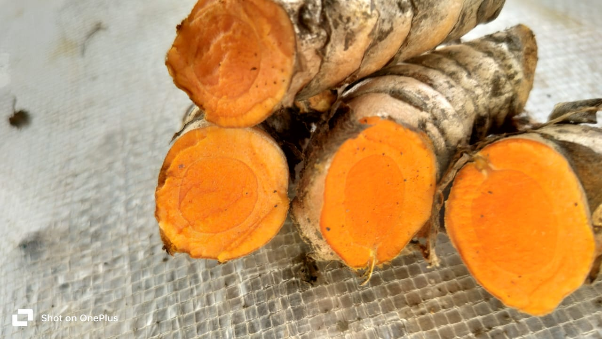
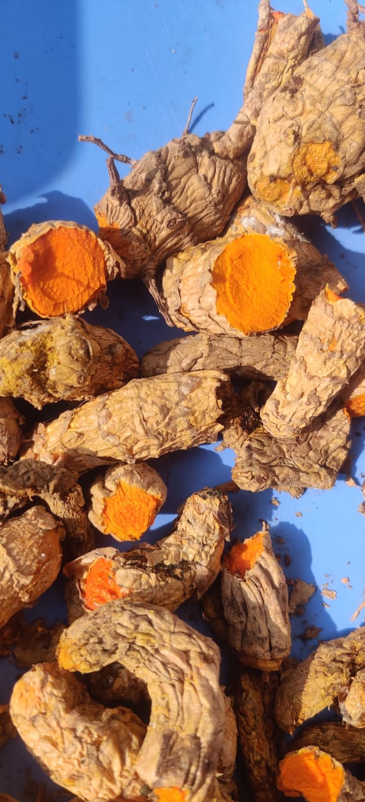
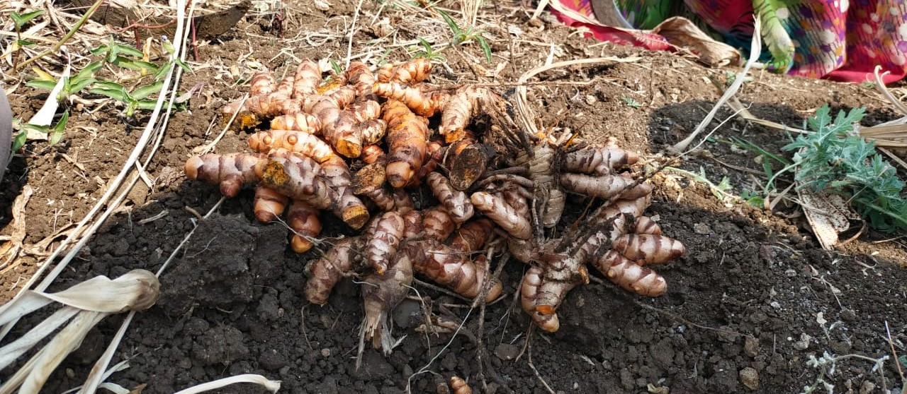

In the world of spices, few ingredients hold as much cultural and medicinal significance as turmeric. But not all turmeric is created equal. Hidden in the fertile landscapes of Waigaon, Maharashtra, lies a treasure known for its unmatched purity, potency, and golden brilliance—Waigaon Turmeric. Unlike regular turmeric, this variety boasts a high curcumin content (up to 7%), earning it the prestigious Geographical Indication (GI) Tag, a mark of its authenticity and superior quality.

For generations, the farmers of Waigaon have preserved the traditional, chemical-free cultivation of turmeric, ensuring it retains its rich aroma, deep golden hue, and powerful medicinal properties. The region’s mineral-rich soil and unique climate create the perfect conditions for this spice to flourish naturally, making it one of the most potent turmeric varieties in the world. Unlike mass-produced turmeric that often undergoes artificial processing, Waigaon Turmeric is hand-harvested, sun-dried, and minimally processed, keeping its natural goodness intact.
While regular turmeric has a 2-3% curcumin content, Waigaon Turmeric surpasses it with up to 7% curcumin, making it far more effective in its medicinal, culinary, and skincare applications. This golden spice is not just a cooking ingredient but a powerful natural healer that has been used for centuries in Ayurveda, traditional medicine, and holistic wellness.


This golden spice isn’t just for curries and traditional dishes—it’s a wellness powerhouse. Add it to golden milk, herbal teas, smoothies, or DIY skincare masks for its incredible health and beauty benefits. It can even be used as a natural food colorant, free from synthetic additives.

Waigaon Turmeric, known for its high curcumin content and deep orange color, received the Geographical Indication (GI) tag in 2016. It is cultivated in Waigaon village, Wardha district, Maharashtra, using traditional organic farming methods. This GI tag recognizes its unique quality, purity, and medicinal properties, making it a highly valued variety of turmeric in India.
Choosing Waigaon Turmeric means more than just selecting a premium spice—it’s about supporting Indian farmers, promoting sustainable agriculture, and investing in a healthier lifestyle. Every pinch of this golden wonder carries the legacy of tradition, purity, and wellness.
Make the switch to authenticity, embrace nature’s golden gift, and let the power of pure, high-curcumin turmeric elevate your health and well-being. Choose the best. Choose Waigaon Turmeric.